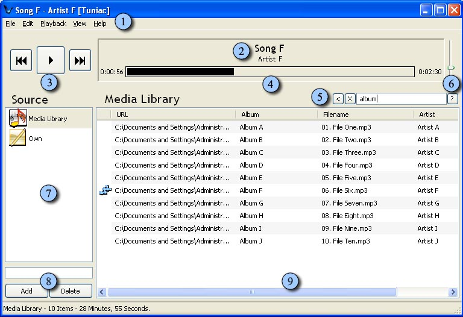
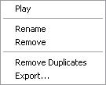
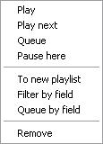

What does what do?
Main screen

1. Menu options
In the menu options you can do all the things you want to do with respect to Tuniac. You can import files, control the player, change your preferences and much, much more. What exactly is possible in these menu's you can find on the Menu options page.
2. Song info
This part of Tuniac shows the currently playing song and the performing artist of the song that is playing.
3. Play controls
Here you can simply control the player, you can start and pause the player from here and go to the next or previous song. You can also control the player with shortcuts which are listed on the Shortcuts page. You can also control the player with command line options which can be found on the Commandline options page. On right clicking the next button you can access the future list. On right clicking the previous button you can access the history list and choose a song in it. If you use ctrl while clicking the previous button, it won't go back one song in the playlist, but one song in history list.
4. Progress bar
On the left of the progressbar you can find the time of the song that has already been played. This time is shown in the progressbar as a black rectangle. On the right of the bar you can find the total length of a song. The time that has not been played yet is shown as the empty space in the progressbar.
5. Search bar
In the search bar you can search for a particular song by giving a keyword of what your looking for. The result can be put in a separate playlist with the small arrow that appears on the left of the bar on typing in a keyword. With the x button that appears on the left you can discard the search results. The question mark on the right, you can use to search by fields. This way you can for example search in the genre, without searching in titles and so on. You can also enable the reverse filter while searching here.
6. Source
In this part of Tuniac the playlists you've created and the media library are shown. It is possible to delete or rename a playlist by clicking on a playlist logo and using the right button on the mouse. This way you can also start playing a certain playlist that you've created. On selecting a certain playlist or the media library the songs in it are displayed in the right window. You can change the playlist order by left clicking and dragging them to a new position. This can not be done with the media library.
7. Volume bar
With this bar you can control the volume.
8. Playlist manage tools
In this part of Tuniac you can create and delete playlists with the add and delete button. You can name the playlist you create using the bar above these buttons.
9. Media library/playlist
This screen shows the songs in the media library or if selected in a created playlist. The logo left of a song shows what song is playing. What info of a song is displayed can be changed in the Edit menu.
Right click menu items
Right menu for the media library and the playlists

Play
Use this option to start playing the songs in the currently selected playlist or the media library.
Rename
You can rename a playlist or the media library with this function.
Remove
With remove you can delete an own made playlist from the listing.
Remove Duplicates
With remove duplicates, the duplicate songs will be deleted from a playlist, this is not a media library option, because it won't accept duplicate entries.
Export...
Exports the playlist.
Right menu for interplaylist actions
In this example playlist a has been right clicked and dragged to playlist c.

Copy To
Copies the files of the playlist you started right clicking and dragging from, to the playlist that you dragged to.
Merge Into
Merges the files of the playlist you started right clicking and dragging from, with the playlist that you dragged to. It keeps the name of the playlist that you dragged to.
Remove From
Removes the files of the playlist you started right clicking and dragging from, from the playlist that you dragged to
Right menu for songs or song fields

Play
With play you start playing the right clicked song.
Play next
Play next will play the right clicked song immediately after finishing the currently playing song.
Queue
With queue, you can make a que for songs to be played. So you can make a precise list of what has to be played next.
Pause here
Pause here is to pause at the right clicked song when arriving there.
To new playlist
Put the selected item or items to a new playlist.
Filter by field
Filter by field filters the playlist using the right clicked field as filter item and then puts the result in a new playlist. With ctrl selected, it will use the reverse filter. So that does exactly the opposite.
Queue by field
Queue by field queues the files matching the field. While holding ctrl, it clears the old queue firs, otherwise it will append the matching items to it.
Remove
This will remove the selected song or the selection of songs. If you do this while holding the shift button, you will be promted with a window, asking you if you would like to remove the song or songs physically from your drive or drives.